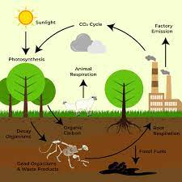

A biogeochemical cycle (or more generally a cycle of matter) is the pathway by which a chemical substance cycles (is turned over or moves through) the biotic and the abiotic compartments of Earth. The biotic compartment is the biosphere and the abiotic compartments are the atmosphere, hydrosphere and lithosphere.
The water cycle is often taught as a simple circular cycle of evaporation, condensation, and precipitation. The paths and influences of water through Earth’s ecosystems are extremely complex and not completely understood.
Water is essential to life on Earth. In its three phases (solid, liquid, and gas), water ties together the major
parts of the Earth’s climate system — air, clouds, the ocean, lakes, vegetation, snowpack, and glaciersoffsite
link.
The water cycle shows the continuous movement of water within the Earth and atmosphere. It is a complex system that
includes many different processes. Liquid water evaporates into water vapor, condenses to form clouds, and precipitates
back to earth in the form of rain and snow.
The nitrogen cycle is the biogeochemical cycle by which nitrogen is converted into multiple chemical forms as it circulates among atmosperic, terrestrial, and marine ecosystems. Important processes in the nitrogen cycle include fixation, ammonification, nitrification, and denitrification. The majority of Earth's atmosphere (78%) is atmospheric nitrogen, making it the largest source of nitroge
Global cycling of reactive nitrogen including industrial fertilizer production, nitrogen fixed by natural ecosystems, nitrogen fixed by oceans, nitrogen fixed by agricultural crops, NOx emitted by biomass burning, NOx emitted from soil, nitrogen fixed by lightning, NH3 emitted by terrestrial ecosystems, deposition of nitrogen to terrestrial surfaces and oceans, NH3 emitted from oceans, ocean NO2 emissions from the atmosphere, denitrification in oceans, and reactive nitrogen burial in oceans.
The carbon cycle is the biogeochemical cycle by which carbon is exchanged among the biosphere, pedosphere, geosphere, hydrosphere, and atmosphere of the Earth. Carbon is the main component of biological compounds as well as a major component of many minerals such as limestone. Carbon sinks in the land and the ocean each currently take up about one-quarter of anthropogenic carbon emissions each year.
Fast carbon cycle showing the movement of carbon between land, atmosphere, and oceans in billions of tons (gigatons) per year. Yellow numbers are natural fluxes, red are human contributions, white are stored carbon. The effects of the slow carbon cycle, such as volcanic and tectonic activity are not included.
The oxygen cycle is the biogeochemical cycle of oxygen atoms between different oxidation states in ions, oxides, and molecules through redox reactions within and between the spheres/reservoirs of the planet Earth.
The atmosphere is 20.9% oxygen by volume, which equates to a total of roughly 34 × 1018 mol of oxygen. Other oxygen-containing molecules in the atmosphere include ozone (O3), carbon dioxide (CO2), water vapor (H2O), and sulphur and nitrogen oxides (SO2, NO, N2O, etc.).
Main reservoirs and fluxes — in the biosphere (green), marine biosphere (blue), lithosphere (brown), and atmosphere (grey). The major fluxes between these reservoirs are shown in colored arrows, where the green arrows are related to the terrestrial biosphere, blue arrows are related to the marine biosphere, black arrows are related to the lithosphere, and the purple arrow is related to space.
The biosphere is 22% oxygen by volume, present mainly as a component of organic molecules (CxHxNxOx) and water.
The hydrosphere is 33% oxygen by volume present mainly as a component of water molecules, with dissolved molecules including free oxygen and carbolic acids (HxCO3).
The lithosphere is 46.6% oxygen by volume, present mainly as silica minerals (SiO2) and other oxide minerals.